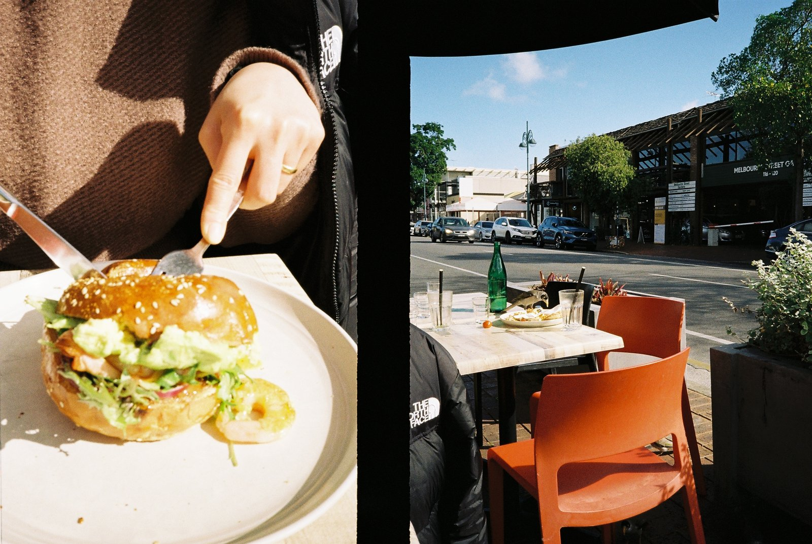
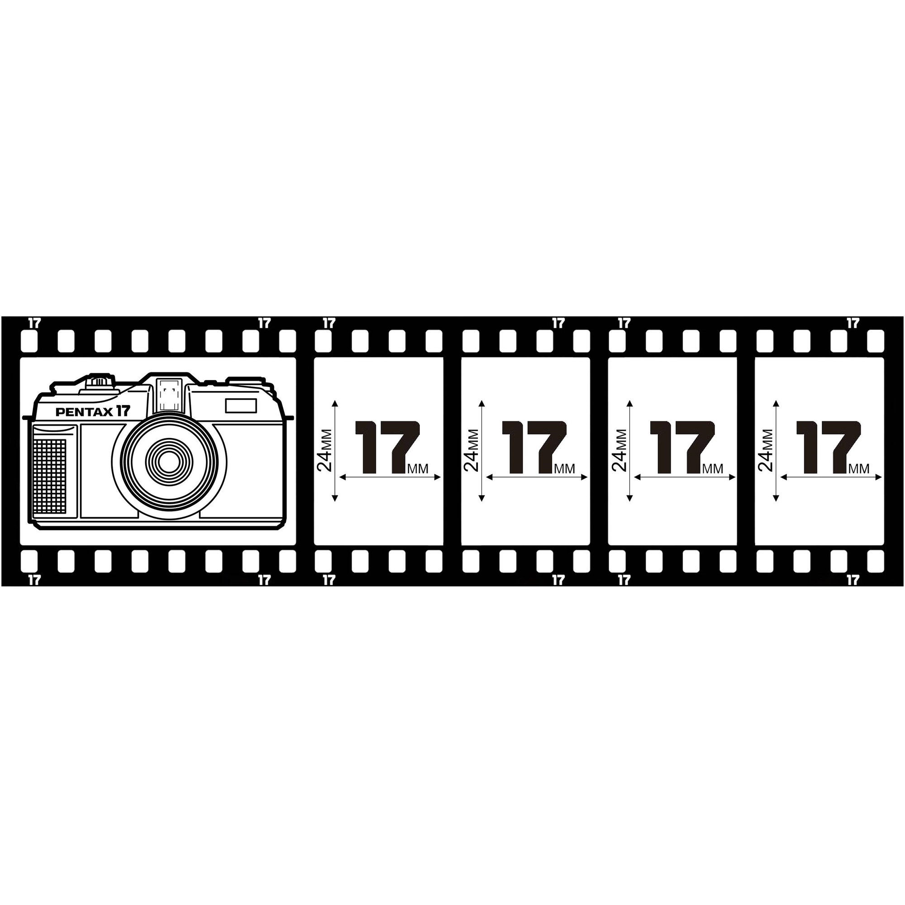
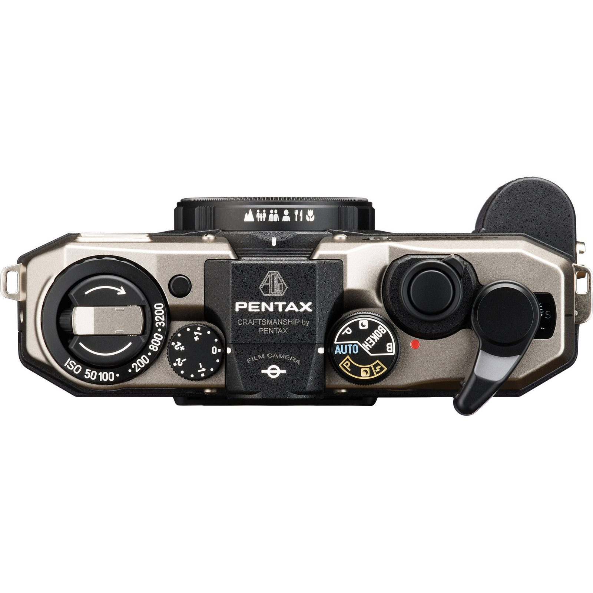
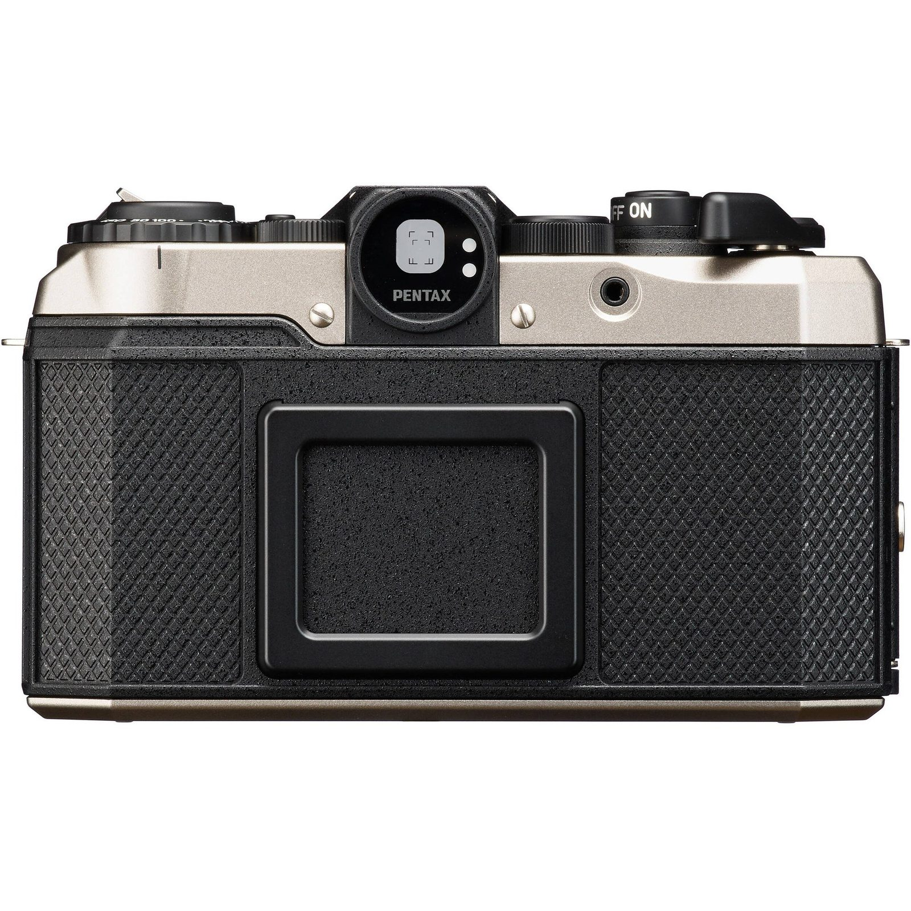
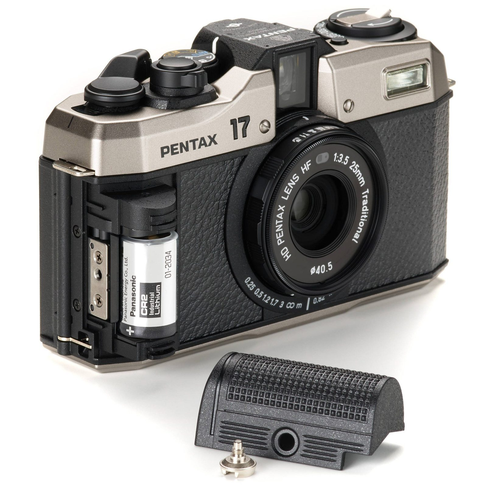
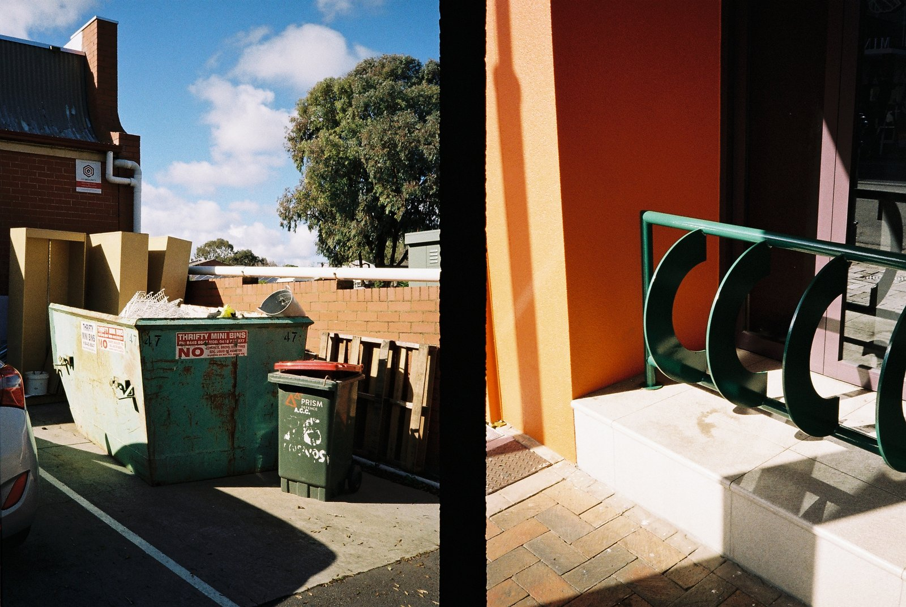
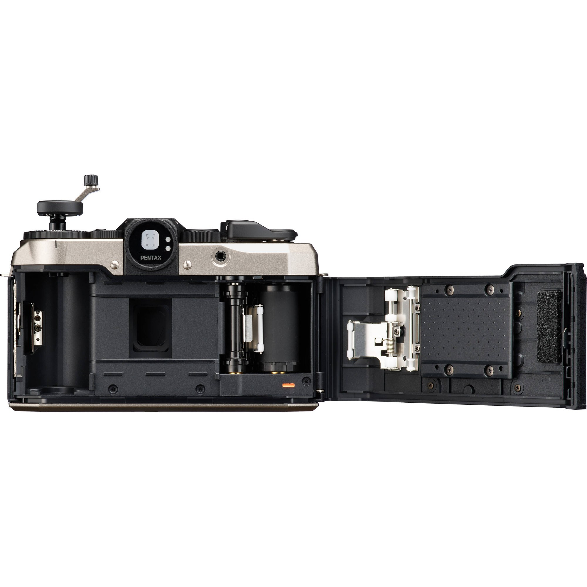
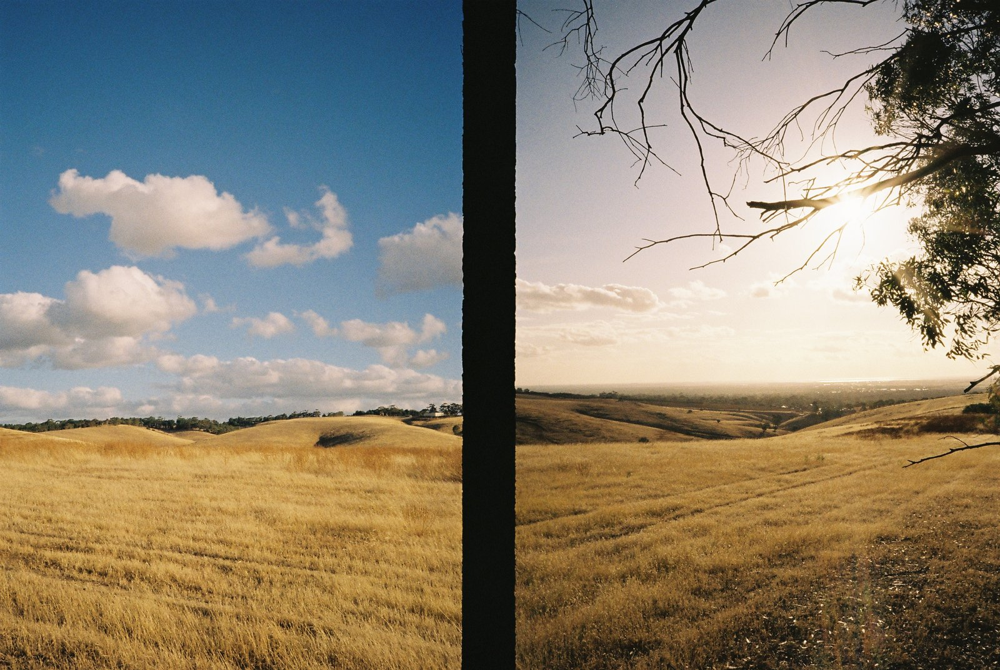
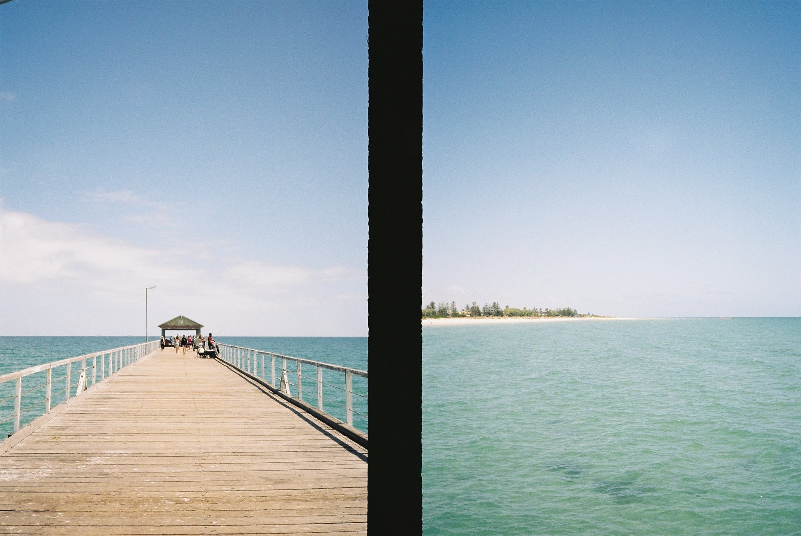

"라이카는 아직도 만든다고 말하는 어리석은 갑부가 있다면, 당장 책을 닫고 당신의 세계로 돌아가기 바란다."
창간호 카메라 리뷰의 주인공은 Pentax 17이다. 메이저 카메라 회사들이 줄줄이 필름카메라 생산을 접은 지 한참, 마침내 새 필름카메라가 나왔다. 그것도 펜탁스에서. 이미 출시된 지 반년이 넘었지만, 여전히 누군가에게는 첫 필름카메라를 고르는 기준이 되고 있는 이 작은 기기를 Brisnap TV가 직접 써봤다.
새 필름카메라가 필요했다
2000년대 후반, 대부분의 메이저 카메라 회사들이 필름카메라 생산을 중단한다고 발표했다. 그때부터 새 필름카메라에 대한 갈증이 시작됐다. 가장 대중적으로 쓰이던 P&S(Point & Shoot, 일명 '똑딱이') 카메라는 중고 물량이 아직 남아 있다고는 해도, 인기 있는 모델들은 출고가를 한참 넘긴 지 오래다. 어렵게 구해도 언제 고장 날지 모르는 시한폭탄을 들고 다니는 스트레스가 만만치 않다.
이런 갈증을 들어준 게 펜탁스다. 출시 초기에는 줄까지 서서 사야 할 정도로 인기가 많았던 카메라. 그 펜탁스 17을 한 컷씩 채워가며 써봤다.

이름의 의미, 그리고 빌드 퀄리티
'17'은 35mm 필름의 절반 크기인 17mm 포맷을 가리킨다. 펜탁스가 늘 그래왔듯, 중형 카메라 67이 6×7cm 포맷이듯, 모델명은 곧 프레임 사이즈다. 다시 말해 하프 프레임 카메라라는 뜻이다.

아직 필름카메라 엔지니어가 남아 있다는 펜탁스가 만든 만큼, 빌드 퀄리티는 이 가격대에서 충분히 만족스럽다. 외장재는 대부분 강화플라스틱이지만, 손에 닿는 모든 부분이 견고하고 매트한 질감을 낸다. 이 가격에 메탈 보디를 기대하는 건 욕심에 가깝다. 그렇다고 저렴한 중국산 리유저블 카메라처럼 헐겁지도 않다.


디자인에 호불호는 있겠지만, 개인적으로는 '호'다. 작고 가볍고, 목에 하루 종일 걸고 다녀도 부담이 없다. 한 가지 아쉬운 건 그립 앞부분을 떼어내야 배터리를 넣을 수 있는 구조인데, 이 부분이 완전 플라스틱이라 촉감에서 살짝 싸구려 느낌이 든다. 여기에 레자라도 덧대거나, 탈부착 가능한 다른 느낌의 액세서리로 팔았으면 어땠을까 하는 아쉬움.

목측식, 그리고 초보를 위한 팬 포커스
오래된 자동 똑딱이 카메라에서 가장 자주 발생하는 고장은 렌즈 경통의 자동 개폐 기능이다. 시간이 지나면 케이블 단선으로 망가진다. 펜탁스가 17을 목측식 카메라로 만든 데에는 이 부분도 고려됐다고 본다.
목측식이지만 오토 모드에서는 팬 포커스로 촬영되기 때문에, 목측식이 뭔지 모르는 초보자도 문제없이 쓸 수 있다. 접사 모드도 있고, 이걸 잘 활용하면 배경 흐림도 느낌 있게 만들 수 있다. 함께 동봉된 스트랩을 기준 삼아 최소 초점 0.25m를 잡으면 얼추 초점이 맞게 찍히는 점도 소소하지만 귀엽다.

72컷의 푸짐함
하프카메라이기 때문에, 36컷 필름을 끼우면 총 72컷을 찍을 수 있다. 디지털로 사진에 입문한 입장에서 36컷은 마치 살찐다고 밥 반 공기만 주는 미운 와이프 같은 느낌이라면, 72컷은 세숫대야 냉면 같은 푸짐함이 있다. 보통은 36컷에 적응돼 있기 때문에, 처음 펜탁스 17을 쓰면 찍어도 찍어도 끝나지 않는 마법을 경험하게 된다.

하프 프레임의 화질이 걱정된다면, 대형 인화나 전시 목적이 아닌 이상 SNS나 일반 사이즈 인화는 충분히 커버한다. 특히 날 좋은 주광에서 촬영하면 정말 느낌 좋은 사진이 나온다. 색감은 쨍하면서도 어딘가 부드럽다.

그리고 이 카메라가 가진 가장 큰 매력은 하프 프레임 특유의 연속성이다. 한 프레임 안에 두 컷이 나란히 들어가면서, 의도하지 않은 디프티치가 만들어진다. 카페의 라떼 한 잔과 그 너머의 하늘, 햄버거를 자르는 손과 길 건너 풍경. 하프 프레임은 단순히 두 배 더 찍는 카메라가 아니라, 두 장면을 하나로 엮는 카메라다.
그래서, 살 만한가
뷰파인더의 작은 네모 두 개의 비밀, 가격대 비교, 그리고 펜탁스 17이 정말 '첫 필름카메라'로 적합한지에 대한 결론까지.
펜탁스 17의 뷰파인더는 굉장히 밝고 선명하다. 안을 들여다보면 작은 네모 두 개가 보이는데, 처음엔 '이게 뭘까' 싶었다. 알고 보니 근거리 시야 보정 프레임이었다. 매크로 모드에서 최소 초점 거리를 잡을 때는 큰 네모가 아니라 작은 네모 안에 프레이밍을 해야 한다. 파인더와 렌즈의 시차 때문에 생기는 문제인데...
결론부터 말하면, 펜탁스 17은 부담 없는 가격, 귀엽고 실용적인 디자인, 하프카메라 특유의 경제성까지 갖춘 카메라다. 완벽하진 않지만, 필름카메라의 감성을 처음 경험해보고 싶은 사람에게 충분히 매력적인 선택지다.
요즘 매일의 순간들을 이 카메라로 기록하고 있다. 단순히 카메라 한 대 이상의 의미가 있다고 느낀다. 이 작은 기기 덕분에 필름카메라가 다시 대중 속으로 스며들고, 더 많은 사람들이 필름의 매력을 느끼게 될 거라 기대한다. 앞으로도 이런 도전을 이어가는 브랜드가 더 많아지길.

매거진에서 더 만날 수 있는 이야기
이 리뷰의 더 자세한 내용 — 뷰파인더의 구조, 가격대 비교, 다른 필름과의 매칭, 그리고 더 많은 샘플 사진들 — 은 5ft.mag 창간호의 카메라 리뷰 섹션에 실려 있다. 같은 호에는 Kodak UltraMax 400 필름 리뷰, 그리고 노애경·박순렬·장형수 작가의 사진 작업도 함께 만나볼 수 있다.
- ● 뷰파인더의 두 네모, 그 정체와 매크로 활용법
- ● 다른 필름카메라와의 가격대·실용성 비교
- ● Kodak ColorPlus 200, JCH Street Pan 400으로 찍은 추가 샘플
전체 리뷰는 매거진에서
Pentax 17 카메라 리뷰의 전문, Kodak UltraMax 400 필름 리뷰, 그리고 세 작가의 사진 작업은 5ft.mag Vol.01 창간호에서 만나볼 수 있습니다.